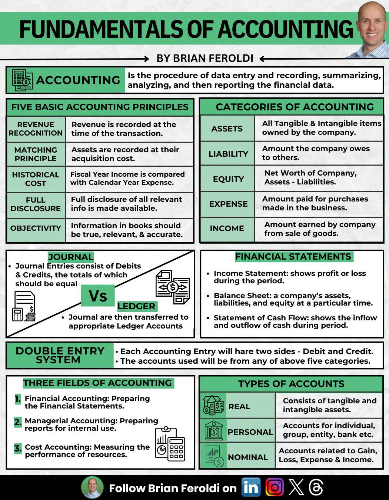

Bab 1: Kabut di Dago Atas
Udara dingin menyelimuti kawasan Dago Pakar malam itu. Kabut tipis mulai turun, mengaburkan pandangan ke arah lampu-lampu kota Bandung yang berkerlip di kejauhan. Di sebuah ruang kerja berkonsep industrial—dengan dinding bata ekspos dan pipa-pipa besi yang dibiarkan terlihat—empat orang insinyur muda tengah berdebat sengit. Mereka adalah tulang punggung dari Syntekno Manufaktur, sebuah perusahaan perakitan komponen otomotif yang sedang berada di ambang kebangkrutan.
Arya, sang CEO sekaligus otak dari desain sistem pabrik, memijat pelipisnya. Di hadapannya, layar proyektor menampilkan grafik Overall Equipment Effectiveness (OEE) yang menembus angka 85 persen. Sebuah pencapaian teknis yang luar biasa. Namun, tepat di sebelahnya, grafik arus kas menunjukkan garis merah yang menukik tajam ke bawah.
"Aku tidak mengerti," gumam Arya, suaranya sarat akan rasa frustrasi. "Secara operasional, kita sudah menerapkan Lean Manufacturing dengan nyaris sempurna. Waktu siklus berkurang dua puluh persen. Limbah produksi turun drastis. Kenapa laporan keuangan kita bulan ini malah menunjukkan kerugian operasional yang masif?"
Dimas, Manajer Operasi yang biasanya tenang, menggebrak meja perlahan. "Karena kita terus memproduksi barang yang belum tentu terserap pasar tepat waktu, Ar! Kamu terus mengejar tingkat utilisasi mesin agar OEE tinggi. Mesin terus menyala. Tenaga kerja terus bekerja. Tapi gudang kita penuh. Barang menumpuk."
Bima, sang Analis Data, membetulkan letak kacamatanya. Ia mengetikkan sesuatu pada laptopnya, memunculkan tabel-tabel database. "Secara sistem, inventory turnover kita memang melambat. Aku sudah mengekstrak data dari Enterprise Resource Planning kita, dan terlihat ada disparitas antara waktu produksi dan waktu pengakuan pendapatan."
Tiba-tiba, suara ketukan pena pada meja kaca memecah ketegangan. Santoso, satu-satunya wanita di ruangan itu sekaligus Manajer Pengendalian Biaya dan Proyek, menatap ketiga rekannya dengan pandangan tajam yang tak terbantahkan. Sebagai lulusan terbaik Teknik Industri ITB yang juga mengambil sertifikasi akuntansi manajerial, Santoso adalah orang yang paling mengerti bahwa angka di atas lantai pabrik seringkali menipu angka di dalam buku besar.
"Kalian semua melihat dari kacamata teknis," potong Santoso tegas. "Kalian mengukur kinerja berdasarkan jumlah barang yang keluar dari mesin, bukan dari bagaimana nilai barang tersebut diakui secara finansial. Kita ini insinyur, betul. Kita diajarkan optimasi dan efisiensi. Tapi perusahaan ini tidak berjalan hanya dengan efisiensi termodinamika atau mekanika. Perusahaan ini bernapas dengan uang. Dan kalian telah mengabaikan fundamental akuntansi."
Bab 2: Membedah Fundamental Akuntansi
Santoso berdiri, berjalan menuju layar proyektor, dan mengganti tampilannya. Sebuah infografis yang padat dan terstruktur muncul di layar. Infografis itu berjudul Fundamentals of Accounting.

"Perhatikan baik-baik gambar ini," ucap Santoso sambil menunjuk blok-blok warna pada infografis tersebut. "Ini bukan sekadar teori anak ekonomi. Ini adalah bahasa bisnis. Masalah kita ada di sini: kita tidak mematuhi Matching Principle dan kita gagal memahami Revenue Recognition."
Arya mengerutkan dahi. "Bisa kau jelaskan dengan bahasa teknik?"
Santoso menghela napas, mencoba menyelaraskan frekuensi pemikirannya. "Baik. Anggaplah akuntansi ini sebagai hukum kekekalan energi, tapi untuk uang. Kita mulai dari Five Basic Accounting Principles. Pertama, Revenue Recognition. Pendapatan itu dicatat saat transaksi terjadi, bukan saat kita selesai memproduksi barang. Selama barang itu masih di gudang, dia bukan pendapatan, dia adalah beban inventaris yang menggerus likuiditas kita!"
Bima mengangguk perlahan. "Jadi, meskipun mesin kita efisien memproduksi sepuluh ribu unit, selama klien belum menyetujui transaksi dan menerima barang, secara finansial kita hanya membakar uang?"
"Tepat!" sahut Santoso. "Lalu yang kedua, Matching Principle. Aset harus dicatat berdasarkan biaya perolehannya. Pengeluaran tahun fiskal harus dibandingkan dengan pendapatan di periode yang sama. Kalian ingat mesin CNC baru yang kita beli bulan lalu? Kalian memasukkan seluruh harganya sebagai pengeluaran operasi bulan ini! Tentu saja Income Statement atau Laporan Laba Rugi kita hancur lebur."
Dimas menengadahkan kepala. "Tunggu dulu. Bukankah kita memang mengeluarkan uang kas sebesar dua milyar rupiah bulan ini untuk mesin itu?"
"Iya, kas kita keluar. Statement of Cash Flow akan mencatat arus kas keluar. Tapi di Income Statement, kita tidak boleh membebankan semuanya sekaligus. Mesin itu adalah Asset. Kita harus menggunakan depresiasi. Biaya mesin itu harus dialokasikan sepanjang umur ekonomisnya, sehingga Expense yang tercatat setiap bulan akan seimbang, atau match, dengan pendapatan yang dihasilkan mesin itu setiap bulannya. Itulah Matching Principle."
Bab 3: Persamaan yang Mengikat Segalanya
Malam semakin larut. Rintik hujan mulai turun membasahi jendela kaca ruangan. Namun, suhu diskusi di dalam justru semakin hangat. Keempat insinyur itu mulai membedah anatomi keuangan perusahaan mereka dengan ketelitian yang sama seperti saat mereka merancang layout pabrik.
Santoso kemudian melangkah ke papan tulis putih di sudut ruangan. Ia mengambil spidol hitam dan mulai menulis sebuah persamaan.
"Ini adalah fondasi dari Double Entry System," jelas Santoso. "Setiap entri akuntansi akan memiliki dua sisi, Debit dan Kredit. Total dari keduanya harus selalu seimbang. Aset perusahaan kita—yakni kas, inventaris, piutang, dan mesin-mesin—harus setara dengan kewajiban atau hutang kita ditambah dengan ekuitas atau modal pemegang saham."
Arya menatap persamaan itu. "Seperti hukum keseimbangan massa."
"Persis," jawab Santoso. "Ketika kita membeli bahan baku secara kredit, Assets kita dalam bentuk inventaris bertambah di sisi kiri. Di sisi kanan, Liabilities atau hutang dagang kita juga bertambah. Persamaan tetap seimbang. Tapi masalah terjadi saat inventaris itu tidak kunjung menjadi Income. Ia tertahan. Sementara itu, Expense operasional harian terus berjalan, menggerus Equity kita."
Bima mulai mengetik dengan cepat. "Jadi, kita perlu membenahi buku besar kita. Di dalam gambar yang kau tunjukkan, ada perbedaan antara Journal dan Ledger. Journal entries consist of Debits and Credits, lalu ditransfer ke Ledger Accounts yang sesuai."
"Benar, Bima," puji Santoso. "Kalian selama ini hanya melihat Cost Accounting, yaitu mengukur performa sumber daya dan biaya produksi. Kalian lupa bahwa kita juga harus menyusun Financial Accounting yang benar untuk membuat Laporan Keuangan, dan Managerial Accounting untuk pengambilan keputusan internal yang strategis."
1. Financial Accounting: Menyiapkan laporan keuangan (Income Statement, Balance Sheet, Cash Flow).
2. Managerial Accounting: Menyiapkan laporan untuk penggunaan internal agar manajemen bisa mengambil keputusan taktis.
3. Cost Accounting: Mengukur kinerja sumber daya dan efisiensi biaya.
Bab 4: Rumus Teknik dan Finansial yang Bersinergi
Dimas, yang sejak tadi menyimak dengan serius, akhirnya angkat bicara. "Oke, Santoso. Aku paham bahwa aku tidak bisa asal menggenjot produksi tanpa melihat kesiapan penjualan. Tapi bagaimana kita menghitung nilai investasi mesin CNC tadi agar pembukuannya benar dan secara engineering economy masuk akal?"
Santoso tersenyum simpul. Ia suka jika rekan-rekannya mulai berpikir integratif. "Kita gunakan metode Depresiasi Garis Lurus untuk pencatatan akuntansi, dan kita evaluasi ulang Net Present Value proyek ini."
Santoso menuliskan dua rumus di papan tulis.
"Misalkan harga mesin (Cost) adalah Rp 2.000.000.000. Nilai sisa (Salvage Value) setelah 5 tahun diperkirakan Rp 200.000.000. Maka beban depresiasi tahunan kita adalah Rp 360.000.000, atau Rp 30.000.000 per bulan. Inilah Expense riil yang kita catat setiap bulan, bukan langsung 2 Milyar! Ini akan langsung memperbaiki wajah Income Statement kita."
Arya mengangguk paham. "Dan untuk memastikan investasi mesin itu memang menguntungkan, kita gunakan NPV, kan?"
"Tepat, Arya," sahut Santoso. "Di mana \( R_t \) adalah arus kas bersih per periode, \( i \) adalah tingkat diskonto atau cost of capital kita, dan \( C_0 \) adalah pengeluaran awal. Jika NPV positif, mesin itu menghasilkan nilai bagi perusahaan. Tapi ingat, \( R_t \) baru bisa terwujud jika barang terjual, bukan sekadar diproduksi. Ini mengacu kembali ke Revenue Recognition."
Bab 5: Restrukturisasi Sistem Kerja
Menjelang pagi, keempat insinyur itu telah merumuskan sebuah strategi baru. Mereka tidak lagi bekerja dalam silo-silo sektoral. Keilmuan teknik industri yang mereka banggakan kini dilebur dengan ketatnya kedisiplinan akuntansi.
Bima mendapat tugas baru. Ia tidak hanya memonitor data cycle time, tetapi juga mengintegrasikan sistem database produksi dengan penggolongan akun atau Types of Accounts.
"Aku akan mengatur ulang arsitektur datanya," kata Bima sambil meregangkan punggung. "Aku akan pastikan setiap pergerakan barang diklasifikasikan dengan benar. Real Accounts untuk aset berwujud dan tak berwujud, Personal Accounts untuk hutang/piutang ke entitas, dan Nominal Accounts untuk melacak kerugian, keuntungan, beban, dan pendapatan. Semua akan terekam dalam sistem jurnal yang double entry."
Dimas pun setuju untuk mengubah metrik sukses di lantai pabrik. "Aku tidak akan lagi mengejar utilitas mesin 100%. Kita beralih ke Just-in-Time sejati. Produksi ditarik oleh permintaan (pull system). Dengan ini, inventory kita akan turun drastis. Assets kita dalam bentuk kas tidak akan terjebak menjadi barang setengah jadi yang diam di gudang."
Arya berdiri, merapikan kerah kemejanya. Ia merasa sebuah beban berat baru saja terangkat dari pundaknya. "Dan sebagai CEO, tugasku adalah memastikan Full Disclosure berjalan. Seluruh informasi relevan mengenai kapasitas produksi dan kesehatan finansial harus transparan. Tidak ada lagi angka efisiensi palsu."
Bab 6: Titik Terang di Ujung Jurnal
Tiga bulan telah berlalu sejak malam panjang berhujan di Dago Atas itu. Pagi ini, matahari bersinar cerah menembus jendela ruang meeting Syntekno Manufaktur. Empat sekawan itu kembali duduk di meja yang sama, namun dengan raut wajah yang jauh berbeda. Tidak ada lagi kerutan frustrasi.
Di layar proyektor, Santoso menampilkan Financial Statements terbaru perusahaan. Tiga pilar utama laporan tersebut terpampang jelas.
1. Income Statement: Menunjukkan grafik laba bersih yang mulai menghijau. Beban operasional terkendali berkat penerapan depresiasi yang tepat sasaran dan matching principle yang ketat.
2. Balance Sheet: Keseimbangan antara Aset di satu sisi, dengan Kewajiban dan Ekuitas di sisi lain, kini terlihat sangat sehat. Penumpukan persediaan telah sirna, digantikan oleh peningkatan kas tunai.
3. Statement of Cash Flow: Arus kas masuk beroperasi (inflow) stabil, melebihi kas yang keluar untuk operasional harian (outflow).
"Kalian melihat ini?" tanya Santoso, matanya berbinar bangga. "Kita tidak mendapatkan pendanaan baru. Kita tidak melakukan PHK. Kita hanya mengubah cara pandang kita. Kita menyeimbangkan antara otak mekanis seorang insinyur dengan logika finansial seorang akuntan."
Arya tersenyum lebar. Ia mengangkat cangkir kopinya. "Untuk Santoso, yang telah mengingatkan kita bahwa sebaik apa pun kita merancang mesin, jika sistem pencatatan nilainya rusak, semuanya akan sia-sia."
Bima dan Dimas ikut mengangkat cangkir mereka. "Untuk Double Entry System!" seru Dimas sambil tertawa.
Bagi kalangan teknik industri terdidik di kota Bandung ini, sebuah pelajaran berharga telah tertanam kuat. Membangun industri bukan sekadar tentang permesinan, robotika, atau tata letak pabrik. Ini tentang memahami esensi nilai dari setiap rupiah yang berputar di dalamnya. Keseimbangan neraca bukan sekadar kewajiban administratif, ia adalah denyut nadi perusahaan itu sendiri. Dan kini, dengan sistem yang terintegrasi secara teknis dan finansial, Syntekno Manufaktur siap melesat lebih jauh.